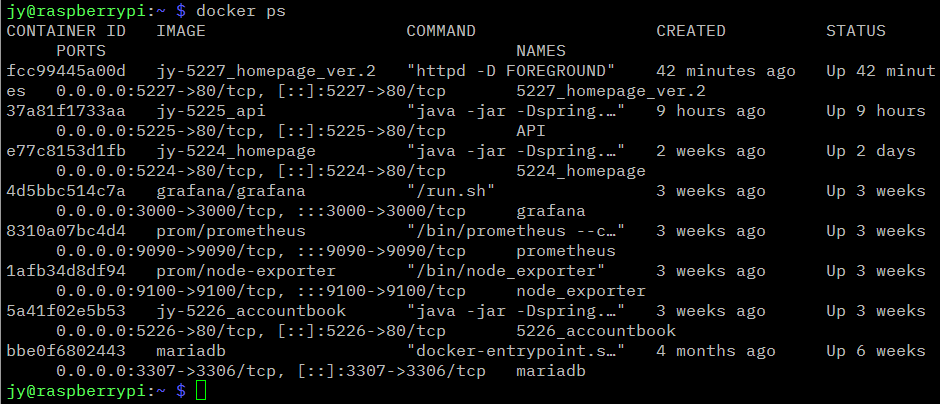
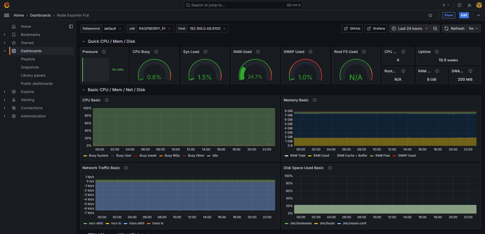
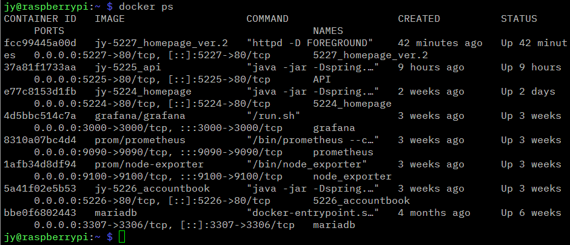
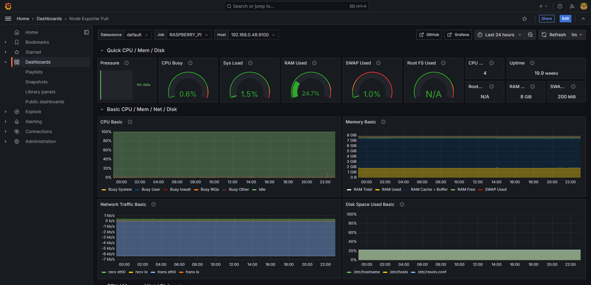

About

PS
해당 홈페이지는 설날 때 만들었다.
나중에 react 공부하면 적용해볼려고 csr 방식으로 만들긴 했는데 언제 공부할지는 미지수..
만들어보고 싶은거나 공부하고 싶은 거 있으면 알아서 공부는 하는 편이다.
현재까지 찍먹해본 것 ☞
미니 PC 관련해서 RaspberryPI, 배포 관련해서 Docker(Image, Container, Docker-compose, Dockerfile), Apache ProxyPass, Apache Session Clustering, Apache mod_jk, SSL 인증서 발급 관련해서 Let's Encrypt, 모니터링 관련해서 Prometheus & Grafana, Linux 파일 공유 관련해서 Samba, 기타 외 RaspberryPI 하드디스크 마운트 등 ...

 


